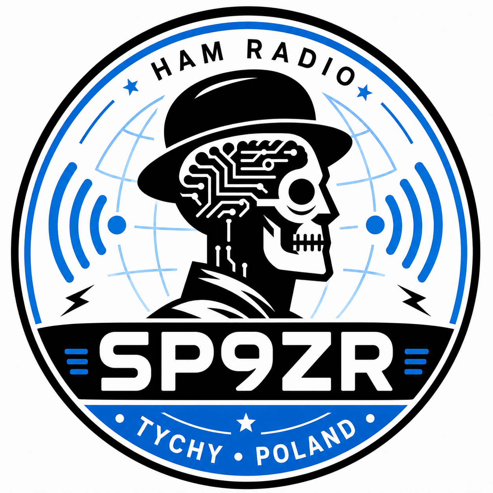

DitTrail
YOUR PATH TO CW
From first dit to first QSO
A modern desktop application designed to guide you step by step from learning your first Morse characters to confident CW operation.
In development
· —
Learn
Build your CW skills progressively, with a clear path from the very beginning.
)))
Listen
Train your ear to recognize Morse naturally and confidently.
─·
Key
Practice sending and develop accurate timing and rhythm.

Created by
SP9ZR